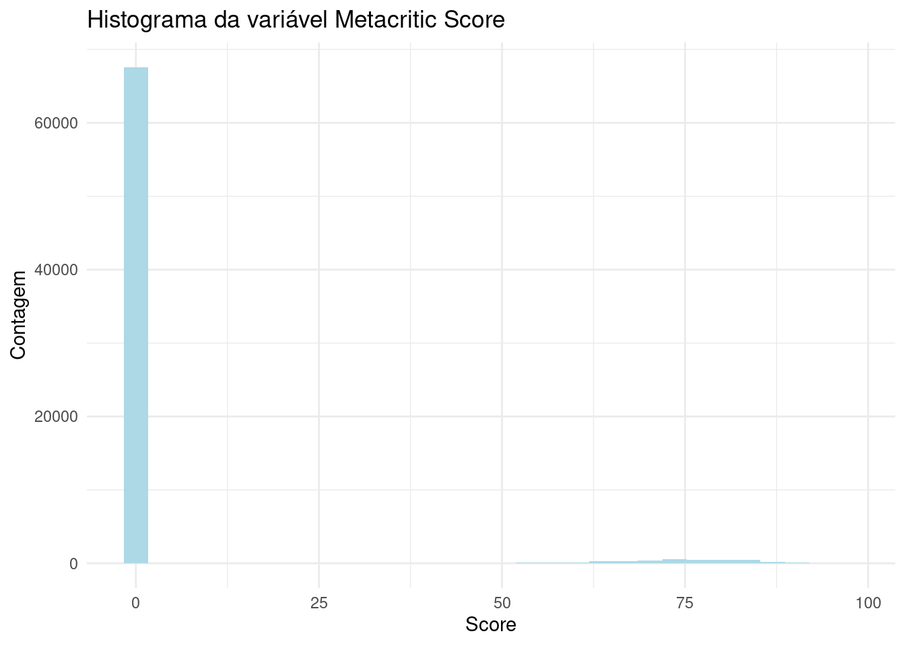

# ## Dados de conexão com o banco da Steam no mongo
# mongolite::mongo_options(log_level = 1)
# mongo_db_user <- config::get("mongo_db_user", file = "config/config.yml")
# mongo_db_password <- config::get("mongo_db_password", file = "config/config.yml")
# mongo_db_url_extra <- config::get("mongo_db_url_extra", file = "config/config.yml")
# mongo_database <- config::get("mongo_database", file = "config/config.yml")
# mongo_collection <- config::get("mongo_collection_full", file = "config/config.yml")
#
# url_srv <- paste0("mongodb+srv://", mongo_db_user, ":", mongo_db_password, mongo_db_url_extra)
# mongo_db <- mongolite::mongo(collection = mongo_collection, db = mongo_database, url = url_srv, verbose = TRUE)
#
# ## Lendo e criando um dataframe com os dados do mongoDB
# df_full <- as.data.frame(mongo_db$find())
df_full <- data.table::fread("data-raw/steam-data/db-1/games.csv")Analise Exploratoria
Análise dos dados da Steam
Objetivo
A ideia desta análise é ilustrar os conhecimentos adquiridos em R, passando pelos pontos de análise exploratória, construção de um dashboard para visualização de dados e por fim trabalhar com modelos de predição para alguns possíveis problemas da indústria.
Primeiro problema
Somos um estúdio de jogos e queremos analisar qual gênero/categoria de jogo tem mais sucesso na steam, mais público e melhores avaliações, também queremos analisar qual faixa de preço é mais interessante para o lançamento desse novo jogo.
Primeiro passo - Análise exploratória
Inicialmente iremos fazer uma análise exploratória de algumas bases de dados e suas variáveis que podem ser interessantes para determinar sucesso de um jogo, a faixa de preço, a quantidade de vendas e relacionar essas questões aos gêneros e categorias. Foram feitas análises de três bases de dados, a primeira mais completa, e as duas seguintes mais focadas em reviews de usuários.
Base de dados - 1
A base de dados usada para esta análise se encontra no Kaggle, através deste link:
https://www.kaggle.com/datasets/fronkongames/steam-games-dataset
Skimr
Usarei o Skimr para a base de dados completa e verificarei quais dados podem ser melhor investigados.
skimr::skim(df_full)| Name | df_full |
| Number of rows | 63210 |
| Number of columns | 39 |
| Key | NULL |
| _______________________ | |
| Column type frequency: | |
| character | 20 |
| logical | 3 |
| numeric | 16 |
| ________________________ | |
| Group variables | None |
Variable type: character
| skim_variable | n_missing | complete_rate | min | max | empty | n_unique | whitespace |
|---|---|---|---|---|---|---|---|
| Name | 0 | 1 | 0 | 137 | 1 | 62768 | 0 |
| Release date | 0 | 1 | 8 | 12 | 0 | 3956 | 0 |
| Estimated owners | 0 | 1 | 5 | 21 | 0 | 14 | 0 |
| About the game | 0 | 1 | 0 | 25695 | 1730 | 61175 | 0 |
| Supported languages | 0 | 1 | 2 | 1216 | 0 | 8760 | 0 |
| Full audio languages | 0 | 1 | 2 | 1216 | 0 | 1750 | 0 |
| Reviews | 0 | 1 | 0 | 2911 | 54336 | 8789 | 0 |
| Header image | 0 | 1 | 72 | 90 | 0 | 63107 | 0 |
| Website | 0 | 1 | 0 | 183 | 30735 | 26826 | 0 |
| Support url | 0 | 1 | 0 | 349 | 30225 | 21902 | 0 |
| Support email | 0 | 1 | 0 | 169 | 9631 | 31932 | 0 |
| Metacritic url | 0 | 1 | 0 | 142 | 59456 | 3661 | 0 |
| Notes | 0 | 1 | 0 | 1391 | 54646 | 7079 | 0 |
| Developers | 0 | 1 | 0 | 584 | 1757 | 37992 | 0 |
| Publishers | 0 | 1 | 0 | 164 | 1963 | 32668 | 0 |
| Categories | 0 | 1 | 0 | 371 | 2646 | 5019 | 0 |
| Genres | 0 | 1 | 0 | 236 | 1738 | 2109 | 0 |
| Tags | 0 | 1 | 0 | 288 | 8929 | 47600 | 0 |
| Screenshots | 0 | 1 | 0 | 22691 | 920 | 62188 | 0 |
| Movies | 0 | 1 | 0 | 3687 | 4192 | 58953 | 0 |
Variable type: logical
| skim_variable | n_missing | complete_rate | mean | count |
|---|---|---|---|---|
| Windows | 0 | 1 | 1.00 | TRU: 63185, FAL: 25 |
| Mac | 0 | 1 | 0.22 | FAL: 49605, TRU: 13605 |
| Linux | 0 | 1 | 0.15 | FAL: 54020, TRU: 9190 |
Variable type: numeric
| skim_variable | n_missing | complete_rate | mean | sd | p0 | p25 | p50 | p75 | p100 | hist |
|---|---|---|---|---|---|---|---|---|---|---|
| AppID | 0 | 1 | 1084383.29 | 531161.77 | 10 | 650982.50 | 1069680.00 | 1526150.00 | 2140820 | ▅▇▇▇▅ |
| Peak CCU | 0 | 1 | 112.55 | 4665.54 | 0 | 0.00 | 0.00 | 1.00 | 825215 | ▇▁▁▁▁ |
| Required age | 0 | 1 | 0.36 | 2.42 | 0 | 0.00 | 0.00 | 0.00 | 21 | ▇▁▁▁▁ |
| Price | 0 | 1 | 7.25 | 10.99 | 0 | 0.99 | 4.99 | 9.99 | 999 | ▇▁▁▁▁ |
| DLC count | 0 | 1 | 0.67 | 15.89 | 0 | 0.00 | 0.00 | 0.00 | 2366 | ▇▁▁▁▁ |
| Metacritic score | 0 | 1 | 4.32 | 17.38 | 0 | 0.00 | 0.00 | 0.00 | 97 | ▇▁▁▁▁ |
| User score | 0 | 1 | 0.05 | 2.03 | 0 | 0.00 | 0.00 | 0.00 | 100 | ▇▁▁▁▁ |
| Positive | 0 | 1 | 1257.10 | 28244.07 | 0 | 2.00 | 12.00 | 75.00 | 5764420 | ▇▁▁▁▁ |
| Negative | 0 | 1 | 204.66 | 5298.19 | 0 | 0.00 | 4.00 | 23.00 | 895978 | ▇▁▁▁▁ |
| Score rank | 63168 | 0 | 98.90 | 0.88 | 97 | 98.00 | 99.00 | 100.00 | 100 | ▁▆▁▇▆ |
| Achievements | 0 | 1 | 23.29 | 197.50 | 0 | 0.00 | 3.00 | 20.00 | 9821 | ▇▁▁▁▁ |
| Recommendations | 0 | 1 | 1009.57 | 20737.06 | 0 | 0.00 | 0.00 | 0.00 | 3441592 | ▇▁▁▁▁ |
| Average playtime forever | 0 | 1 | 134.21 | 1309.27 | 0 | 0.00 | 0.00 | 0.00 | 145727 | ▇▁▁▁▁ |
| Average playtime two weeks | 0 | 1 | 12.39 | 215.67 | 0 | 0.00 | 0.00 | 0.00 | 19159 | ▇▁▁▁▁ |
| Median playtime forever | 0 | 1 | 120.22 | 1747.66 | 0 | 0.00 | 0.00 | 0.00 | 208473 | ▇▁▁▁▁ |
| Median playtime two weeks | 0 | 1 | 13.26 | 234.06 | 0 | 0.00 | 0.00 | 0.00 | 19159 | ▇▁▁▁▁ |
## Usaremos a função do Janitor para editar os nomes das colunas e torná-las mais fáceis de serem manipuladas
## E então faremos a seleção das colunas que serão analisadas
df_selected <- df_full |>
janitor::clean_names() |>
dplyr::select(app_id, name, developers, publishers, categories, genres, tags, release_date, estimated_owners, peak_ccu, price, windows, mac, linux, metacritic_score, user_score, positive, negative, recommendations, average_playtime_forever, median_playtime_forever, average_playtime_two_weeks, median_playtime_two_weeks) |>
dplyr::mutate(release_date = lubridate::mdy(release_date)) Removendo Softwares e não jogos
Após a análise inicial, foi detectado que existiam nesta base de dados softwares que não eram considerados jogos, portanto eles serão excluídos para que não comprometam as futuras análises.
Vamos utilizar a variável genres para identificar os gêneros que não são jogos.
# ## Colunas categories, genres, separando em linhas
# df_selected <- df_selected |>
# tidyr::separate_rows(categories, sep = ",") |>
# tidyr::separate_rows(genres, sep = ",")
notGames <- c("Utilities", "Design & Illustration", "Animation & Modeling", "Game Development", "Photo Editing", "Audio Production", "Video Production", "Accounting", "Movie", "Documentary", "Episodic", "Short", "Tutorial", "360 Video")
# unique(df_selected$genres)
df_selected_gen <- df_selected |>
dplyr::filter(!(genres %in% notGames))
## Esses eram dois jogos que foram investigados
## Eles possuíam categorias Movie e Documentary também, então esses registros foram apagados e os demais foram mantidos
# df_full_search <- df_full |>
# dplyr::filter(Name %in% c("Spacelords", "CAT SUDOKU🐱"))Escolhendo as variáveis
Após uma análise inicial das tabelas geradas pelo skimr, selecionei algumas variáveis que seriam analisadas mais profundamente. A começar pelas variáveis relativas a notas, críticas e avaliações dos jogos.
library(ggplot2)
ggplot(df_selected_gen, aes(metacritic_score)) +
geom_histogram() +
theme_minimal() +
labs(title = "Histograma da variável Metacritic Score",
x = "Score",
y = "Contagem")`stat_bin()` using `bins = 30`. Pick better value with `binwidth`.
Pelo Histograma podemos ver que a variável Metacritic Score (renomeada para metacritic_score) não é muito interessante, seu preenchimento foi visto como completo pelo skim, porém quase em sua totalidade as notas são “0”, ou seja, não temos uma nota definida para avaliar os jogos.
Outras variáveis de avaliação como Reviews, User Score, e Recommendations, foram analisadas porém apresentaram pouco úteis, ou por terem um preenchimento muito baixo ou por envolverem outros tipos de dados (que não fossem uma avaliação direta).
Nova métrica de avaliações
A única métrica que parece interessante de avaliação dos jogos, é a de avaliações positivas e negativas (as variáveis Positive e Negative).
Para isso foi criado uma nova variável, que mede a taxa de avaliações positivas e negativas de um jogo, chamada overall_rate.
df_selected_gen$overall <- df_selected_gen$positive*100/(df_selected_gen$positive + df_selected_gen$negative)
df_selected_gen$overall[1:100] [1] 35.29412 91.37931 NaN 100.00000 86.20690 63.97059 75.00000
[8] NaN 92.68293 83.33333 73.53308 71.70732 100.00000 76.59574
[15] 95.23810 72.25673 100.00000 94.45983 NaN 75.00000 67.77778
[22] 50.87719 78.50369 28.57143 87.30512 62.71186 26.47059 90.47619
[29] 82.75862 NaN 56.09756 66.66667 61.53846 60.84906 100.00000
[36] 77.77778 66.66667 81.39535 70.54291 81.15942 37.67123 73.20819
[43] NaN 77.46948 62.16216 50.00000 79.91676 40.00000 56.60377
[50] 87.50000 100.00000 NaN NaN 50.00000 85.71429 80.23256
[57] 89.03251 10.52632 60.00000 100.00000 0.00000 75.46667 77.77778
[64] 56.45439 100.00000 89.52023 100.00000 100.00000 86.95652 NaN
[71] 96.96845 NaN 89.47368 100.00000 77.77778 40.00000 NaN
[78] 70.45455 NaN 100.00000 27.77778 0.00000 83.33333 83.33333
[85] 100.00000 33.33333 90.32258 76.11940 67.86885 100.00000 NaN
[92] 83.01887 89.70434 76.08696 NaN 96.49192 50.00000 100.00000
[99] 77.77778 100.00000Analisando essa nova métrica, verificamos que possuímos dados NaN e valores de 100, respectivamente, resultados de de divisões \(0/0\) e de jogos sem avaliação negativa. Os números NaN serão removidos, já que não serão úteis para avaliação dos jogos, os números 100 serão investigados mais a fundo.
Filtrando dados inválidos
## Criando uma variável do tipo fator para número de donos estimados
levels_owners <- c("0 - 0", "0 - 20000", "20000 - 50000", "50000 - 100000",
"100000 - 200000", "200000 - 500000", "500000 - 1000000",
"1000000 - 2000000", "2000000 - 5000000", "5000000 - 10000000",
"10000000 - 20000000", "20000000 - 50000000", "50000000 - 100000000",
"100000000 - 200000000")
df_selected_gen$estimated_owners <- as.factor(df_selected_gen$estimated_owners)
df_selected_gen$estimated_owners <- factor(df_selected_gen$estimated_owners, levels = levels_owners)
## Verificando dados que serão considerados inválidos
df_100 <- df_selected_gen |>
dplyr::filter(positive < 20 & (overall == 100)) |>
dplyr::select(name, publishers, categories, genres, release_date, estimated_owners, positive, negative, overall)
## Filtrando regras
df_selected_gen <- df_selected_gen |>
dplyr::filter(positive > 20 &
((as.integer(estimated_owners) > 2 & price > 0) |
(as.integer(estimated_owners) > 3 & price == 0)) &
overall < 100)
# skimr::skim(df_selected_gen)E então defini mais alguns filtros, de jogos que possivelmente seriam problemáticos. Estabeleci as regras:
O jogo precisa ter pelo menos 20 avaliações positivas.
O jogo precisa ter pelo menos uma avaliação negativa (para que a avaliação não seja de 100%).
O jogo precisa ter pelo menos 50 mil usuários no caso de ser gratuito, e pelo menos 20 mil usuários para jogos pagos.
Deduplicação
Após a análise do novo banco de dados filtrado, descobri mais um problema que precisava ser tratado, dados duplicados. Verificando pelo nome dos jogos, encontrei dados duplicados, mas que possuíam IDs diferentes, avaliações e às vezes preços diferentes. Investigando mais pelo próprio site da Steam e pelo site SteamDB (SteamDB), concluí que se tratavam de dados referentes à novas versões (jogo do ano, versão de luxo, etc), jogos que possuíam versões diferentes (no caso dos Call of Dutys, versões para o jogo campanha e para o jogo multiplayer, mini-expansões, pacotes de skins (aparências para armas e personagens), pacotes de itens pagos como benefícios no jogos, etc. Portanto, decidi remover essas duplicatas, e usarei como base dados de número de usuários (o jogo base muito provavelmente vai ter mais usuários) e número de jogadores.
library(janitor)
Attaching package: 'janitor'The following objects are masked from 'package:stats':
chisq.test, fisher.testdf_dupli <- df_selected_gen |>
janitor::get_dupes(name, developers)
df_selected_gen <- df_selected_gen |>
dplyr::arrange(name, desc(as.integer(estimated_owners)), desc(overall)) |>
dplyr::distinct(name, .keep_all = T)Então a regra criada para este filtro respeitará, primeiro o número de jogadores, o jogo que possuir mais jogadores permanecerá na base, segundo, em caso de empate do primeiro, o jogo com melhor avaliação.
Base de dados - 2
Como os dados de avaliações eram escassas e eu já havia encontrado outras bases de dados, decidi analisar outras bases e verificar se possuía outra que fosse mais interessante com propósito de verificar dados de avaliação dos jogos.
df_reviews <- data.table::fread(here::here("data-raw/steam-data/db-4/dataset.csv"))
name <- unique(df_reviews$app_name)
unique(df_reviews$review_score)[1] 1 -1df_reviews$positive <- dplyr::if_else(df_reviews$review_score == 1, 1, 0)
df_reviews$negative <- dplyr::if_else(df_reviews$review_score == -1, 1, 0)
df_reviews_group <- df_reviews |>
dplyr::group_by(app_id) |>
dplyr::summarise(count_positive = sum(positive),
count_negative = sum(negative)) |>
dplyr::distinct(app_id, .keep_all = T) |>
dplyr::ungroup() |>
dplyr::inner_join(df_reviews[!duplicated(df_reviews[, c("app_id", "app_name")]), c("app_id", "app_name")])Joining with `by = join_by(app_id)`df_reviews_head <- df_reviews |>
dplyr::slice_sample(prop = 0.1)
db_unique <- df_reviews[!duplicated(df_reviews[, c("app_id", "app_name")]), c("app_id", "app_name")]
# df_reviews <- data.table::fread("data-raw/steam-data/db-5/GamesAndRecommendation/recommendations.csv")Após uma investigação da base, verifiquei que ela era um pouco antiga, por não possuir títulos como o “Counter-Strike: Global Offensive”, portanto deixei ela de lado e parti para a análise da outra base de recomendações.
Base de dados - 3
df_reviews <- data.table::fread("data-raw/steam-data/db-3/recommendations.csv")
df_games <- data.table::fread("data-raw/steam-data/db-3/games.csv")
df_games <- df_games |>
dplyr::filter(positive_ratio < 100 & user_reviews > 20)Após a análise desta nova base de dados, concluí que ela possui sim dados mais atualizados de jogos (com jogos datados de fev/2023), mas possui menos dados relacionados a línguas suportadas (tanto legendas quanto áudios), dados de pico de usuários, dados de DLC, dados de empresas (como sites, e-mail de suporte, imagem do jogo), dados do Metacritic (por mais que não tenham sido úteis) e dados de tempo de jogo. Então utilizarei ela apenas para verificar a avaliação dos usuários (através das colunas positive_ratio e user_reviews). Serão aplicados filtros análogos, não podemos ter apenas avaliações positivas (positive_ratio == 100) e para reviews precisamos ter pelo menos 20 (user_reviews > 20).
Deduplicação
O mesmo processo de deduplicação precisou ser feito na nova base.
library(janitor)
df_dupli <- df_games |>
janitor::get_dupes(title)Porém, ao contrário da base anterior, neste caso todos os jogos “duplicados” se tratavam de jogos diferentes que possuíam o mesmo nome, portanto nenhum deles foi removido.
Diferenças entre base 1 e 3
## Antijoins através do ID
games_antijoin_games_app_id <- dplyr::anti_join(df_games[, c("app_id", "title", "user_reviews", "date_release")], df_selected_gen[, c("app_id", "name")],
by = "app_id")
# ## Antijoin após remover os IDs não encontrados, utilizando o nome dos jogos
# games_antijoin_games_name <- dplyr::anti_join(df_games[, c("app_id", "title", "user_reviews", "date_release")], df_selected_gen[, c("app_id", "name")], by = c("title" = "name"))
#
# ## Verificando os jogos que foram excluídos pelo ID mas possuíam nomes iguais
# games_antijoin_games <- dplyr::anti_join(games_antijoin_games_app_id, games_antijoin_games_name)
games_antijoin_sel_app_id <- dplyr::anti_join(df_selected_gen[, c("app_id", "name", "positive", "release_date")], df_games[, c("app_id", "title")],
by = "app_id")
#
# games_antijoin_sel_name <- dplyr::anti_join(games_antijoin_sel_app_id, df_games[, c("app_id", "title")], by = c("name" = "title"))
#
# ## Verificando os jogos que foram excluídos pelo ID mas possuíam nomes iguais
# games_antijoin_sel <- dplyr::anti_join(games_antijoin_sel_app_id, games_antijoin_sel_name)
df_games <- df_games |>
dplyr::rename(name = title)
games_fulljoin <- dplyr::full_join(df_games[, c("app_id", "name", "user_reviews", "date_release")], df_selected_gen[, c("app_id", "name", "release_date")], by = "app_id")
games_fulljoin <- dplyr::full_join(df_games, df_selected_gen, by = "app_id") |>
dplyr::select(app_id, name_games = name.x, rating, positive_ratio, user_reviews,
name_sel = name.y, overall, positive, negative, recommendations,
date_release, release_date)
games_fulljoin_date <- games_fulljoin |>
dplyr::filter(release_date != date_release)
# search_in_1 <- df_games[stringr::str_detect(df_games$name, "Rainbow Six"),]
# search_in_2 <- df_selected_gen[stringr::str_detect(df_selected_gen$name, "Rainbow Six"),]Usei o anti_join como método para avaliar os jogos que estávam apenas em uma das bases e não na outra. Ao verificar os resultados, percebi que a base 1 excluíu muitos jogos devido aos filtros aplicados, principalmente os filtros relacionados a avaliações positivas, e os mesmos jogos na base 3 apresentavam um número de reviews positivos maior, portanto, utilizarei a base 3 e farei a adição dos jogos da base 1 que não estão presentes na base 3 para criar um único banco de dados de jogos. Para um primeiro momento onde farei a avaliação de recomendações, trabalharei dessa forma, posteriormente junto à base 3 de recomendação existe uma outra base com informações dos jogos e será posteriormente agregada para adicionar informações.
Unindo as bases
## Jogos presentes na base 1 que não estão na base 3
df_antijoin_games <- dplyr::anti_join(df_selected_gen, df_games, by = "app_id") |>
dplyr::mutate(rating = 0, price_final = 0, price_original = 0, discount = 0, steam_deck = F,
db1 = T) |>
dplyr::select(app_id, title = name, date_release = release_date, win = windows, mac, linux, rating,
positive_ratio = overall, user_reviews = user_score, price_final = price, price_original,
discount, steam_deck, db1)
df_games <- df_games |>
dplyr::mutate(db1 = F, date_release = lubridate::ymd(date_release))
df_all_games <- rbind(df_games, df_antijoin_games, fill = T)Também foi analisado novamente as duplicatas que foram geradas, e novamente foi decidido mantê-lás, já que representavam, ou jogos que possuíam o mesmo nome, mas são jogos diferentes, ou são diferentes versões dos jogos (versão normal e versão game of the year ou um relançámento por exemplo).
Adicionando informações
Agora adicionaremos à base agrupada os dados referentes às informações do jogo, inicialmente adicionando através de outro arquivo presente nos arquivos da base 3.
run_join <- F
if(run_join){
library(jsonlite)
out <- lapply(readLines("data-raw/steam-data/db-3/games_metadata.json"), fromJSON)
## Unindo o terceiro elemento da lista
for(i in 1:length(out)){
purrr::pluck(out, i, 3)<-paste0(purrr::pluck(out, i, 3), collapse = ",")
}
## Transformando em um dataframe para unir à outra base
df_metadata <- do.call(rbind.data.frame, out)
## Adicionando coluna de tags do df_metadata, e adicionando colunas de categoria, genero e tags extra do df anterior
df_all_games <- dplyr::left_join(df_all_games, df_metadata, by = "app_id") |>
dplyr::select(-description) |>
dplyr::left_join(df_selected |>
dplyr::select(app_id, categories, genres, tags) |>
dplyr::rename(tags_extra = tags),
by = "app_id")
## Escrevendo nova base para não precisar rodar os joins e comparações todas as vezes
if(!dir.exists("data-raw/steam-data/db-created")){
dir.create("data-raw/steam-data/db-created")
}
data.table::fwrite(df_all_games, "data-raw/steam-data/db-created/db-reviews-join.csv")
}else{
df_all_games <- data.table::fread("data-raw/steam-data/db-created/db-reviews-join.csv")
}
## Substituindo células em branco por NA no caso de estar lendo o csv
if(!run_join){
df_all_games <- df_all_games |>
dplyr::mutate(categories = ifelse(categories == "", NA, categories),
genres = ifelse(genres == "", NA, genres),
tags = ifelse(tags == "", NA, tags),
tags_extra = ifelse(tags_extra == "", NA, tags_extra))
}
## Verificando quantos jogos não possuem categorias, gêneros ou tags/tags_extra definidos
nrow(df_all_games[is.na(categories), ])[1] 4942nrow(df_all_games[is.na(genres), ])[1] 4810nrow(df_all_games[is.na(tags) & is.na(tags_extra), ])[1] 30Analisando dados dos jogos
Agora que já uni as duas bases, e tenho uma quantidade mais razoável de jogos a serem analisados, precisarei definir qual será a forma de avaliar os estilos/gêneros/categorias dos jogos, por ser uma coluna presente em ambas as bases, a variável tags é uma ótima candidata, porém ela apresenta um número de possibilidades bastante grande e distinta, o que poderia ser prejudicial à análise. Já as outras variáveis categories e genres que são mais específicas, não estão presentes em aproximadamente 20% da base de dados. A análise será feita inicialmente nas três para posterior decisão de qual ou quais usar.
Categorias
df_all_games |>
dplyr::filter(!(is.na(categories)) & categories != "") |>
nrow()[1] 18454Ou seja, temos aproximadamente 20% da base de dados sem nenhuma informação de categorias, a variável poderia ser utilizada, porém com algumas ressalvas.
Gêneros
df_all_games |>
dplyr::filter(!(is.na(genres)) & genres != "") |>
nrow()[1] 18586Novamente, cerca de 20% da base sem informações de gênero.
Categorias e Gênero
df_all_games |>
dplyr::filter(!(is.na(categories)) & categories != "") |>
dplyr::filter(!(is.na(genres)) & genres != "") |>
nrow()[1] 18434E, para efeito de comparação, podemos ver que os valores sem categorias e gênero são as mesmas observações, o que faz bastante sentido já que foram unidas e uma das duas bases não possuía essas colunas.
Investigando preços
Vamos agora nos debruçar sobre as faixas de preços e em seguida faremos um cruzamento dos dados de preços e tags
Texto do arquivo de teste
print("Print do filho")[1] "Print do filho"Capítulo do arquivo de teste
Mais texto pós capítulo